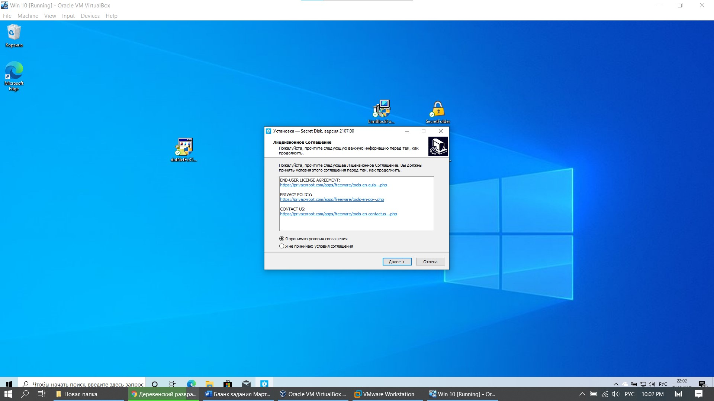
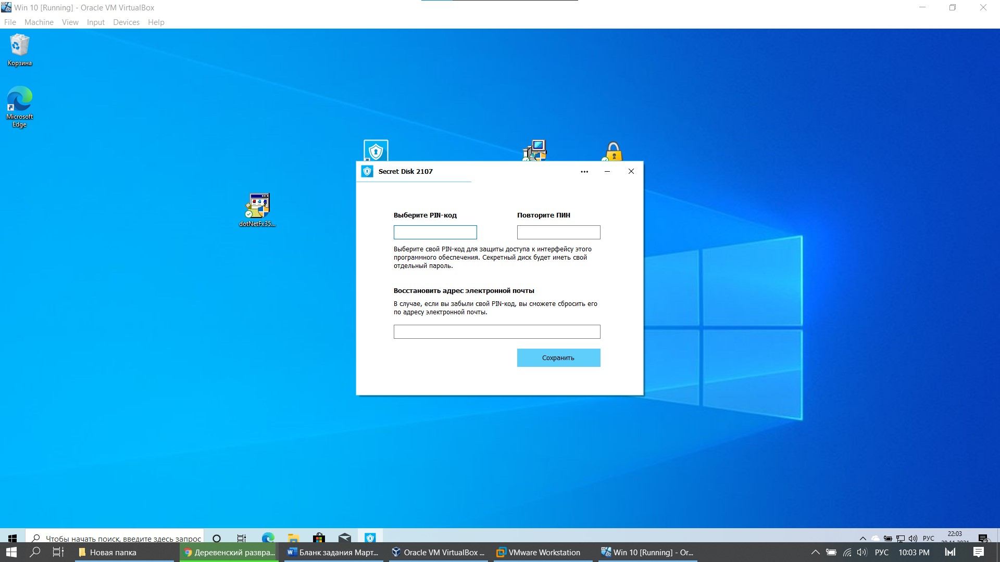
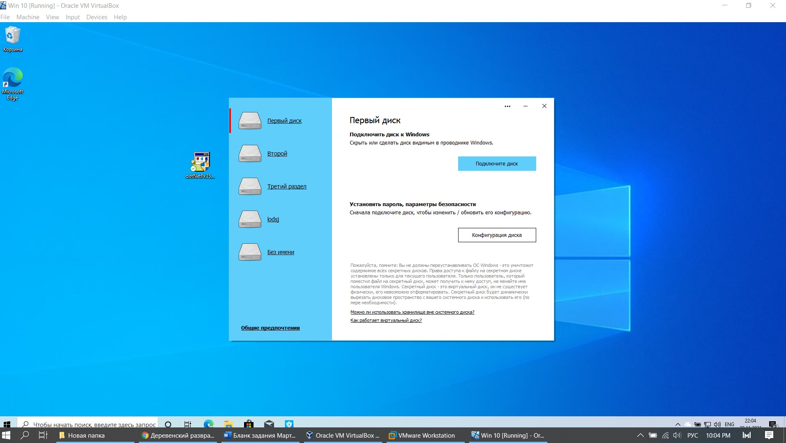
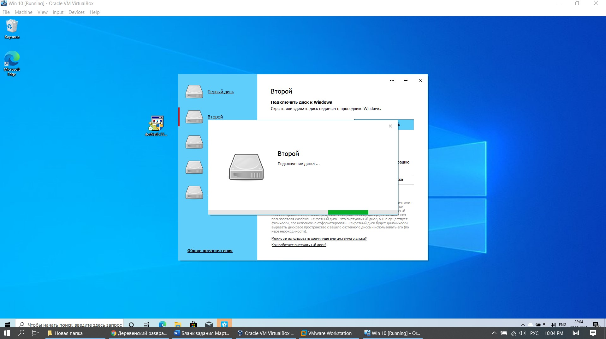
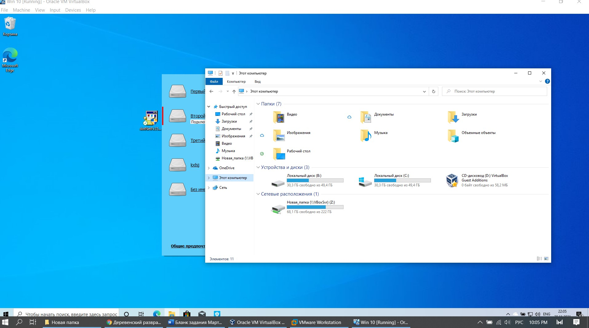
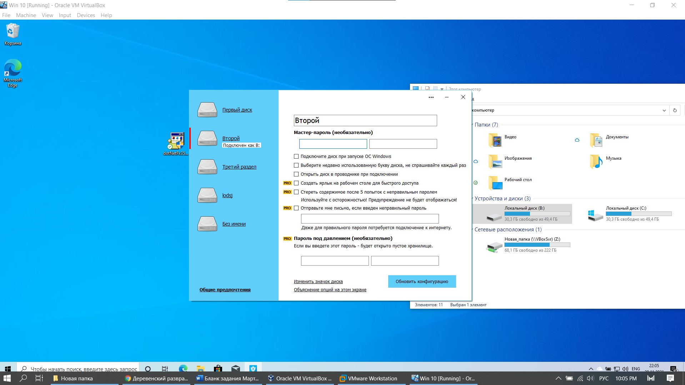
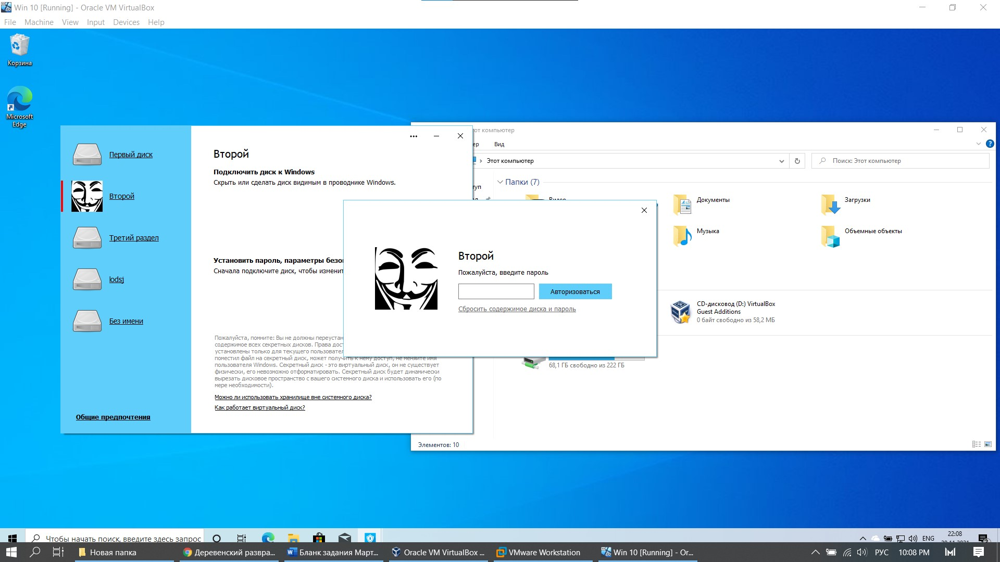

1 SecretDisk |
|
Secret Disk 4 – это программно-аппаратный продукт для защиты конфиденциальной информации (коммерческой тайны, персональных данных),
хранящейся и обрабатываемой на рабочих станциях под управлением OС Microsoft Windows 2000 / XP. К основным функциям Secret Disk 4.0
относится обеспечение: криптографической защиты от НСД информации на жёстком диске персонального компьютера, включая системный раздел;
двухфакторной аутентификации пользователей до загрузки операционной системы с помощью USB-ключей eToken; многопользовательской работы с
защищенными данными, хранящимися на персональном компьютере; возможности экстренного отключения зашифрованных дисков; сокрытия наличия
на персональном компьютере конфиденциальной информации. С помощью Secret Disk 4 можно реализовать различные сценарии защиты конфиденциальной
информации от несанкционированного доступа. Вы сможете сохранить критически важную информацию в том случае, если злоумышленник получит
физический доступ к жестким дискам (например, при проникновении в офис компании), или при инсайдерской атаке, где главным действующим лицом
является штатный сотрудник компании (включая специалиста IT-отдела или системного администратора). Кроме того, вы сможете уберечь свои данные
от излишней заинтересованности посторонних лиц, имеющих доступ к компьютерному оборудованию (сотрудники сервисного центра, обслуживающего оборудование). |
| Установка программы быстрая, состоит только из соглашения, выбора места инсталляции и предложения создания дополнительных ярлыков. |
|  |
| Рис. 1 Установка приложения |
| При запуски приложения перед нами появляется окно регистрации полльзователя, состоит она из пароля, при помощи которого можно
получить доступ к самой программе и адреса электронной почты, чтобы в случае чего воссатновить забытый пароль. Изображение окна – рисунок 19. |
|  |
| Рис. 2 Регистрация пользователя |
| После регистрации мы видим окно, в котором можем создать фиктивный диск, установить на него пароль,изображение,ярлыки и прочее. |
| Некоторые функции платные, поэтому протестировать их не удалось. |
|  |
| Рис. 3 Выбор диска |
|  |
| Рис. 4 Создание диска |
|  |
| Рис. 5 Вид фиктивного диска в проводнике |
|  |
| Рис. 6 Конфигурация диска |
| После создания диска и работой с ним – мы можем отключить диск, таким образом он сокроет фиктивный диск и все файлы, находящиеся на нем. |
 |
| Рис. 7 Отключение диска |
| При попытке опять активировать диск – нас просят авторизоваться или ввести пароль, который мы записали в конфигурации диска. |
|  |
| Рис. 8 Пароль диска |
| Вывод: удобная программа, просто ориентироваться, можно вызывать подсказки и прочитав дополнительную информацию – разобраться
в интерфейсе. Хорошо еще то, что с программой проблем не было, как во время установки, так и во время запуска. Единственный
минус, который я могу выделить – чтобы открыть PRO функции, надо заплатить. В таком случае программу я считаю условно платной. |